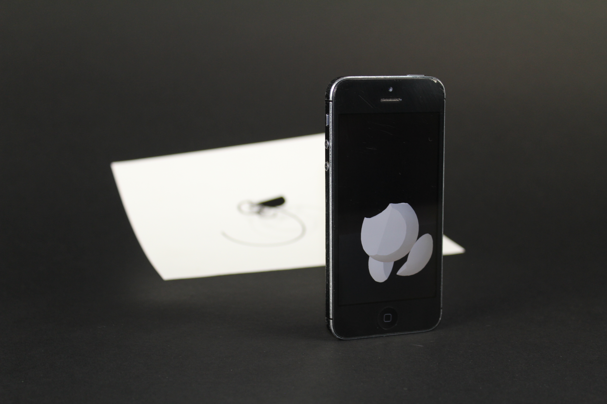
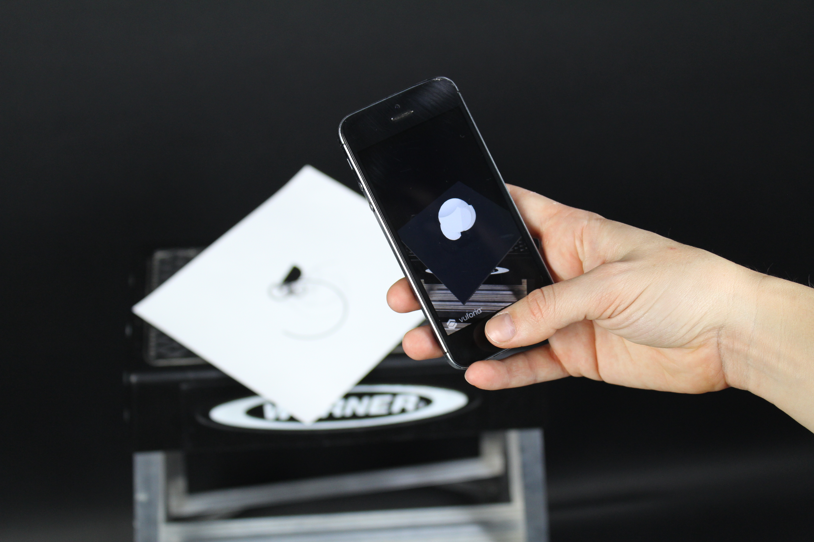

an augmented reality sculpture
Rowena Reed Kostellow's 3D curriculum is legendary at Pratt Insitute. Through multiple semesters, students study the principles of three-dimensinal form by creating iterative clay compositions. Final iterations assume permanent shape in plaster sculptures.
Sandra recreated the final plaster compositions in augmented reality, exploring the translation from physical existence to digital three-dimesinality to two-dimensional image targets.
____ tools: unity3d, vuforia, autodesk maya
____ prototype: iOS
 